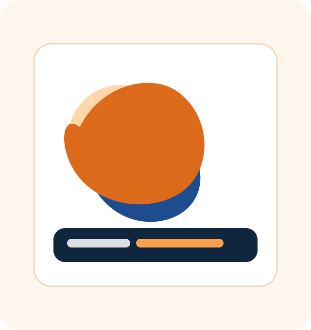
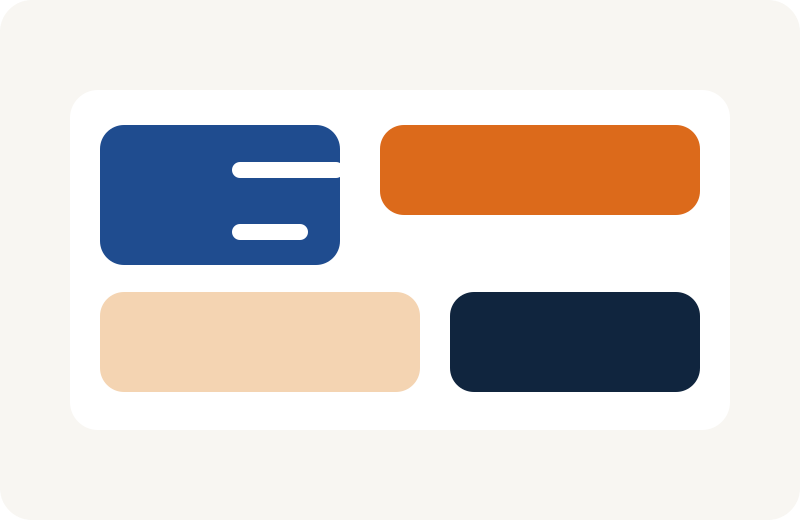
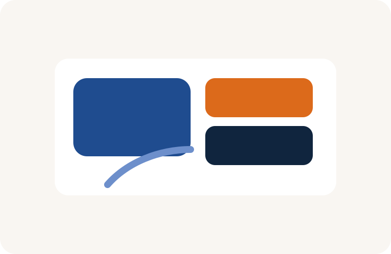

Продуманный маршрут
Сбалансированная логистика, удобные переезды и оптимальный темп, чтобы отдых был вдохновляющим, а не утомительным.
Путешествия по Китаю с заботой и комфортом
Мы организуем маршруты по Пекину, Сианю, Чэнду, Шанхаю и другим жемчужинам страны — с удобным трансфером, понятной логистикой и личной поддержкой на каждом этапе.

Почему выбирают нас
Сбалансированная логистика, удобные переезды и оптимальный темп, чтобы отдых был вдохновляющим, а не утомительным.
Маршрут подбирается под ваши интересы: от гастрономии и храмов до современных мегаполисов и природных маршрутов.
Вы заранее знаете, что входит в программу, а мы помогаем избежать скрытых расходов и лишних сюрпризов.
От первого звонка до возвращения домой — вы не остаётесь один на один с организацией маршрута.
Популярные маршруты

Идеальный маршрут для знакомства с Китаем: Великая стена, Терракотовая армия, футуристичный Шанхай.
ПодробнееГастрономия, чайные сады, панды и горные виды — спокойная и насыщенная программа.
Подробнее
Для тех, кто любит сочетание деловой динамики, красивых каналов и расслабленного темпа.
ПодробнееКак мы работаем
Организация путешествия занимает минимум времени и максимум внимания к деталям.
Вы рассказываете о целях поездки, а мы подбираем лучший вариант под ваш вкус и бюджет.
Согласуем гостиницы, трансферы, питание, экскурсии и все важные пожелания.
Вы получаете поддержку на всех этапах, а поездка проходит спокойно и по-настоящему комфортно.
Готовы к поездке?